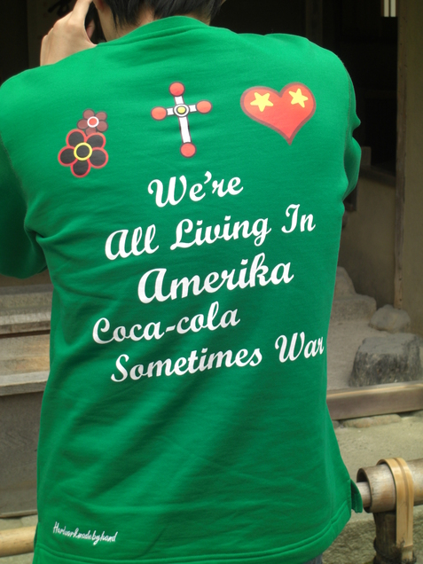
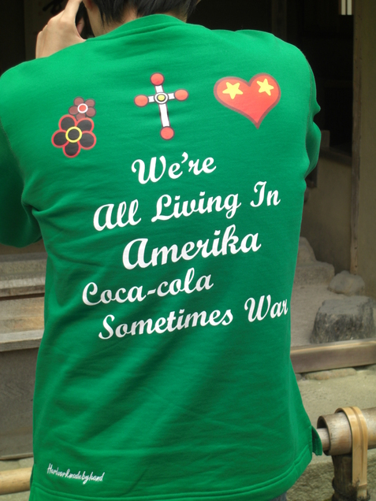

Now here's an article from The Onion that I can relate to! I remember taking an interpretation/translation class, and the teacher talked about her teacher, who would often translate for President Bush. Bush liked his jokes and puns, which were often nigh untranslatable in Japanese. So what the translator would do is just deadpan the Japanese group he was translating for and say, "He just said a really, really bad joke. Just laugh and make him feel good." This alone would cause the group to laugh, so Bush thought his joke was what was doing it. Poor dumb bastard...
May 2010 Archives
There was an interesting article in Physics Today (yikes, a disturbance in the Nerd Force -- I could feel the jocks of the world simultaneously and unconsciously clenching their fists just now.) about China's growing dominance over rare earth metals. While china isn't a rare earth metal, I couldn't think of a snappier title. Anyway, it'll impact you in...well, read for yourself!
Eh, not one of the best Onion videos, but still a good one. I like the idea that God has a plan for all of our deaths... Anyway, enjoy!
Christian Groups: Biblical Armageddon Must Be Taught Alongside Global Warming
Christian Groups: Biblical Armageddon Must Be Taught Alongside Global Warming
Wonder what that would be... I'm guessing stony cold silence and emotional distance. Had to interpret for two Icelanders once. Nice enough guys, but very quiet, and drank like fish at lunch. They were learning about dry rock gardening. Guess they got tired of ice sculptures.
Anyway, great news for Bjork lovers! Now YOU TOO can learn Icelandic, free, online! Check out Icelandic Online and get started i dag!
Anyway, great news for Bjork lovers! Now YOU TOO can learn Icelandic, free, online! Check out Icelandic Online and get started i dag!
Ah, Shakespeare. Is there anyone better at flingin' words around and stuff? I came across this nice website about words 'n phrases he coined and may have coined. I particularly like the phrases that didn't come into common usage. All considering, I'm sure it's just a matter of time. (While not bereft of choices, we need new words other than "LOL" and "ROFL."
No, this isn't a corny pun this time. It's actually an online project to digitize and archive cultural works. They have some 30,000 books in their collection, all free, all downloadable, most public domain works. Ever thought you'd love to read David Copperfield in your spare time, but loathed to spend two pence to buy it from some liquored up bookstore owner? Well, here it is for free! Be sure to check it out and toss 'em a straw penny if you've got it. You'll find them here. Happy reading!
As some of you may know, Arizona has passed a controversial illegal immigration bill. I honestly haven't read through the details of the bill, so I can't comment as yet on its merits or demerits. However, I do know that the following movie looks like it will kick some serious butt, and if Machete's pissed at the bill, well, I suppose we all had better be. Incidentally, there's a nice interview over at avclub.com about the star, Danny Trejo. He is seriously a do-not-fuck-with-me kinda dude, so again, oppose the Arizona immigration bill, or get ready for a whole can of spicy whoop-ass opened up all over ya.
I'm sure there are those that would give me flak for this, but why? I think it's merely a restatement of key biblical principles, no? Wonder how many Big Bangs I've wasted in my life...? Sigh. I should start carrying a lighter around.
Surely these are the kinds of innocent, wonderful things that kids (and adults!) think when they pray, right? I have no doubt in my mind, personally... Thanks to The Onion again for great writing!
Check it out here.

Check it out here.
日本へ復帰しとったでぇ！That's right, I'm back in the Land of the Rising Fun. It's good to be back again, and it's great to be back with my old company. I'll be sure to keep you up to date with all the travails (and once I get a bike again, trails) in Kyoto/Osaka. I hope to even start a restaurant review page, a la Restaurant Review Guy! Neat, eh? In the meantime, enjoy this funtastic shirt. I'm more of a Dr. Pepper or Root Beer kinda warmonger myself though...

